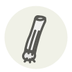

Lemongrass
Citronnelle
| Latin name | Cymbopogon citratus |
|---|---|
| Family | Herbs |
| Origin | Maritime Southeast Asia |
| Season (France) | All year |
| Flavour | Citrusy · Fresh · Floral · Green |
| Typical price (France) | 8–15 €/kg |
What it is
A grass that decided to be a citrus: its stalks carry citral, the same aromatic soul as lemon zest, without any of the acid. It is the upright backbone of Thai tom yum and Vietnamese broths — always present, always fished out, never chewed.
In the kitchen
Use only the pale lower third; bruise it flat with the knife’s spine to crack the perfume open before it goes in the pot.
Goes with
Coconut milk Ginger Chili pepper Shrimp Chicken Cilantro / Coriander
Also used with
Andaliman Banana leaf Butterfly pea flower Makrut lime Indonesian bay leaf (daun salam) Fingerroot
Something wrong here, or missing? Tell us